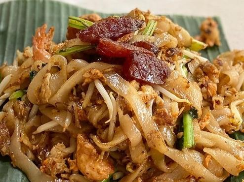

Nasi Uduk is a dish featuring assortments of vegetables and or meat, typically seen with eggs, tempe, bihun, and stir-fried cabbage.
What makes Nasi Uduk special is the rice, where the rice is cooked in coconut milk to give a heavier, filling flavour
The common ingredients to Nasi Uduk are the following: